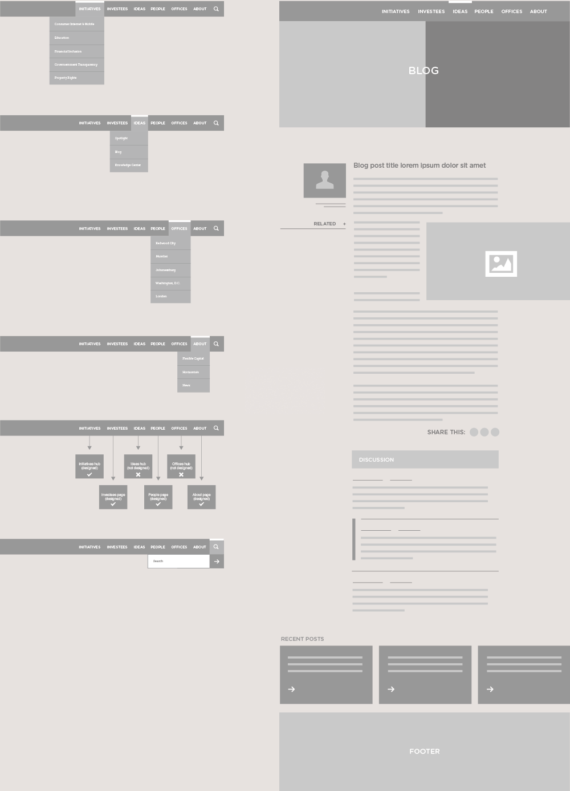
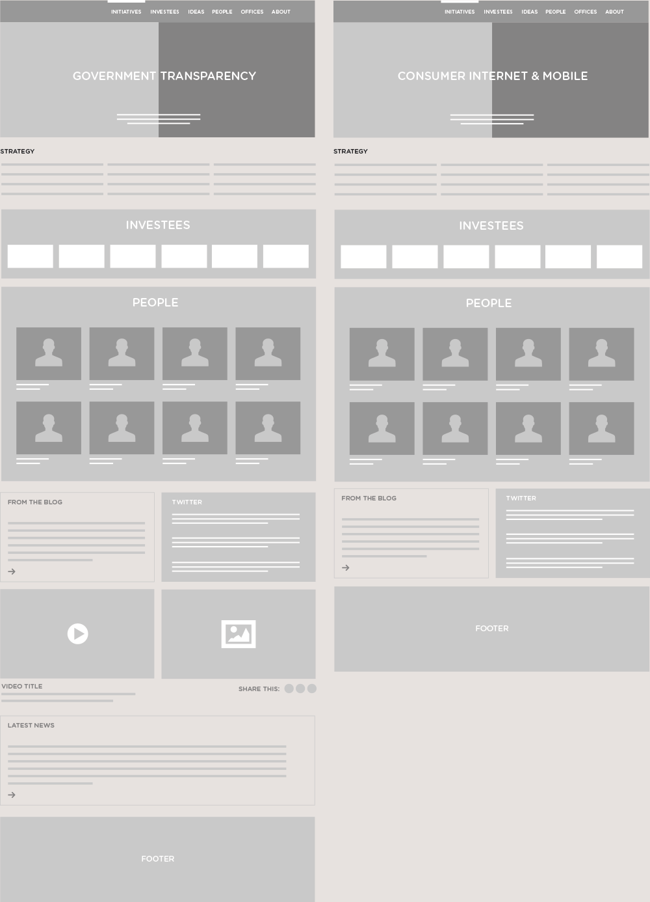
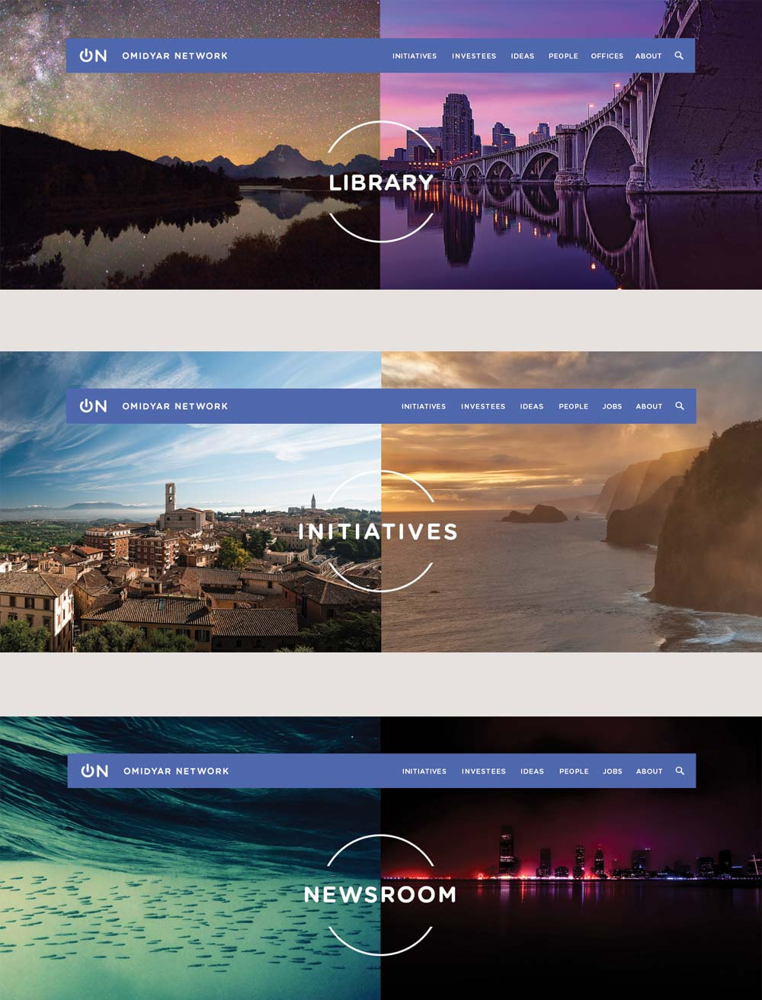
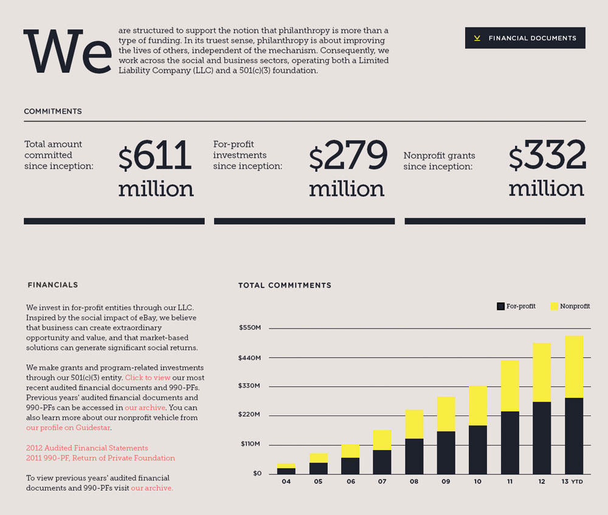
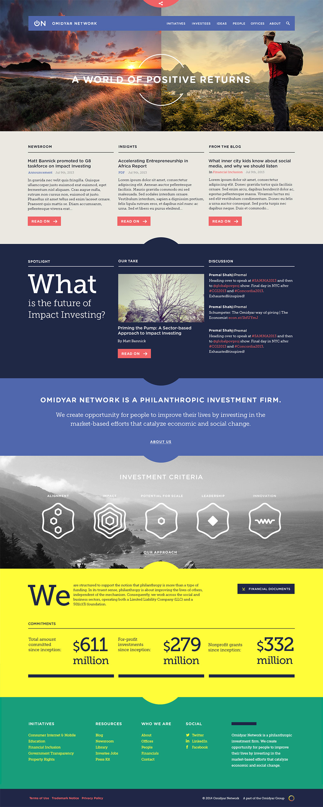
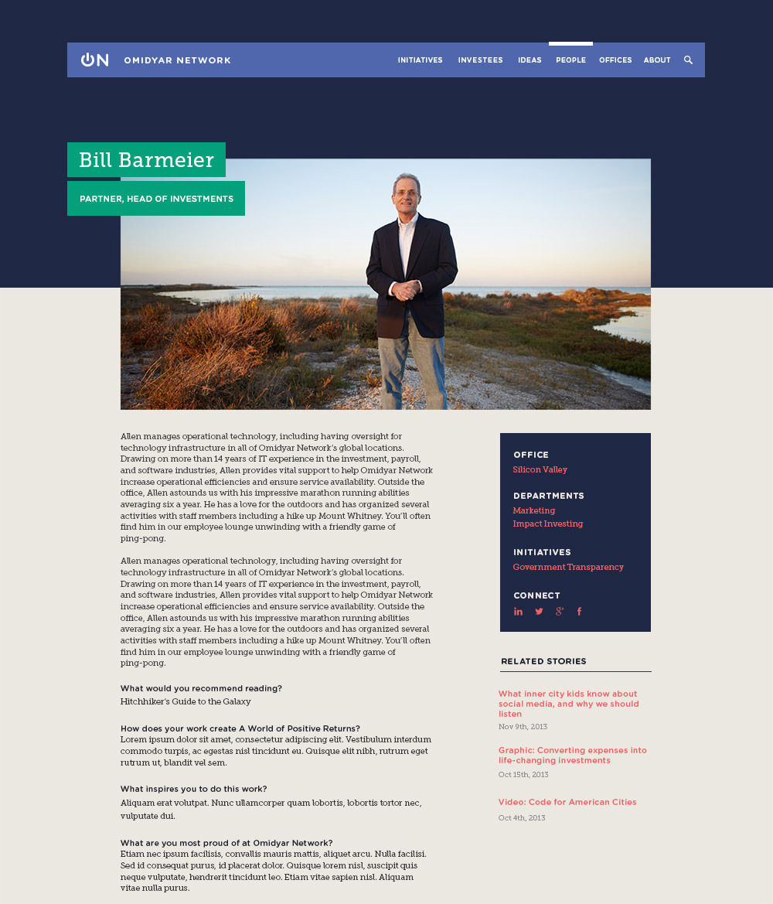
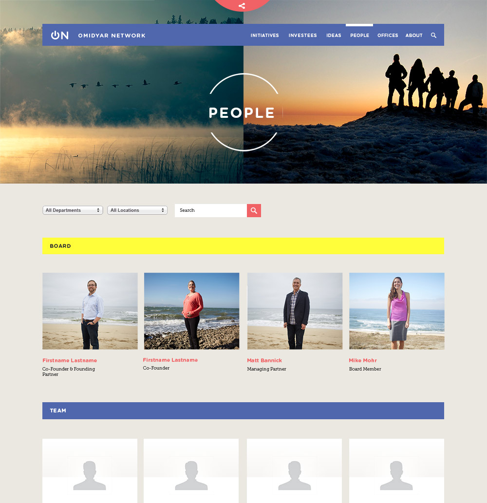
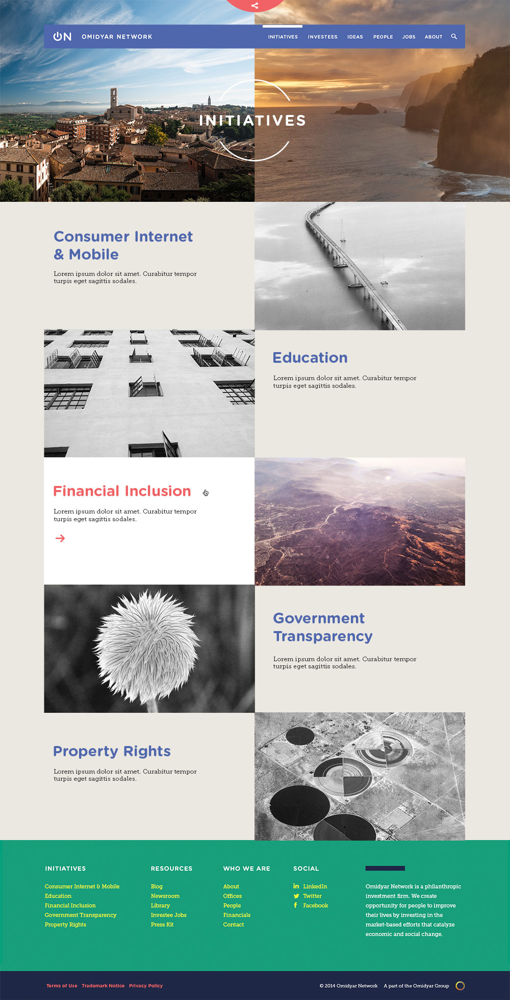

When Pierre Omidyar started eBay, running it on a server under his desk at his full time job, he couldn't have then imagined the way it would completely transform online commerce. Fast forward to 2014, and he's now sold eBay and thrown the entire weight of his effort behind The Omidyar Network, a philanthropic investment group seeking to buoy not just single businesses, but entire sectors, in parts of the world where the boon to infrastructure is needed most.
With the Network now entering its 10th year of operation, a refresh to the company identity and web presence as well as a clarification of its mission were a top priority.
We took what we knew about communication goals and content strategy and loosely storyboarded the navigation and interior pages
We knew the Network had several departments that would all need their own pages. Some would be more active than others, but all needed to be fed via the same CMS without breaking the design. Add in responsive, and it was clear that we needed a very modular approach.
Once we had a basic idea of how things would be connected, we moved into visual design. Omidyar Network wanted a site that demonstrated how it was a large worldwide network, but that they were all still very closely connected. We came up with the idea of aligning the horizons in our photos to show all the various people and places the Network touches.
For the typography I chose H&FJ's Gotham Rounded for it's combination of approachability and strength, and Museo Slab as a sharp, readable serif that juxtaposes nicely against it.
Here's how it all came together:
   